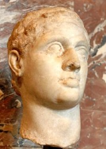

| |
Ptolemy XIII
Ptolemy XIII Theos Philopator was born in 62 BC was the son of Pharoah Ptolemy XII of Egypt,he succeeded his father as the co-ruler of Egypt by his marriage to his older sister Cleopatra VII of Egypt.He was one of the last members of Ptolemaic dynasty of Egypt.Ptolemy along with Ponthinus attempted to depose Cleopatra as she was getting too famous as queen ,her face started to appear on minted coins whereas Ptolemy name was omitted from all official documents ,so he along with Ponthnus managed to flee Cleopatra to Syria.This resulted in Civil war between Cleopatra and Ptolemy.

Ptolemy
For
more information please visit :
More Information about Ptolemy XIII from Wikipedia
| |
|
|